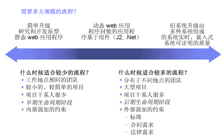

| 概念：调整流程 |
 |
|
讨论流程越多（例如，使用更多的工件、创建更多详细的文档、开发和维护更多需要同步的模型以及实施更多正式的复审）并不代表越好。因而，我们需要规模合适的流程来适应项目需求。随着项目越来越大、地域分布越来越广、使用的技术越来越复杂、项目干系人越来越众多、严格符合法规章程的需求越来越迫切，流程也就需要越专业。但是，对于较小的项目，并且团队在相同地点工作、技术已知，流程就应较为轻量级。 
推动流程专业程度的因素。 项目的流程应适应生命周期中的阶段。一方面，在项目开始时，我们通常将面对许多不确定性，并且必须积极鼓励创造性地开发处理业务需求的应用程序。通常流程越多创造性越低（而非创造性越高），因此必须在每天都会遇到不确定情况的项目早期使用最少的流程。 另一方面，在项目后期，我们需要引入更多的控制（诸如变更控制委员会）来防止不希望出现的创造性开发和关联风险，它们会在后期将缺陷引入产品，而这又将产生更多的流程。 企业应致力于持续改进流程。请考虑在每个迭代之后执行评估，并在项目最终总结经验教训，然后加以充分利用来改进流程。 鼓励所有团队成员持续挖掘不断改进的机会。 最终，使项目计划和关联的估计与项目的不确定性保持平衡至关重要。 这意味着，在有着大量不确定性的项目早期，计划和关联估计的重点应放在全面性计划和估计，而不应将目标放在细节问题上（当时这些问题实际上并不存在）。早期开发活动的目标应去除不确定性，以逐步使计划更为准确。 |
© Copyright IBM Corp. 1987, 2006. All Rights Reserved. |